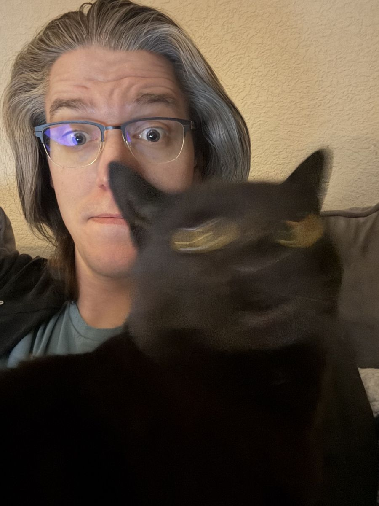

Hi, I'm Josh
I am returning CS student at CU Boulder after working as an optician for 15 years. I am excited to dive into a new and rewarding career, learning about the rich world of computer science and challenging myself with meaningful projects.